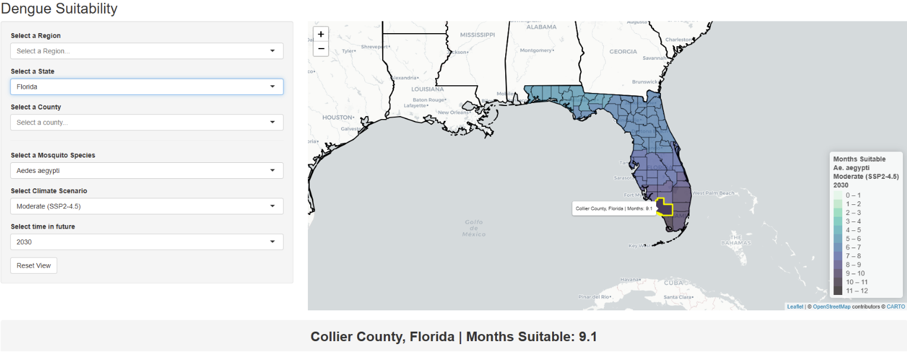
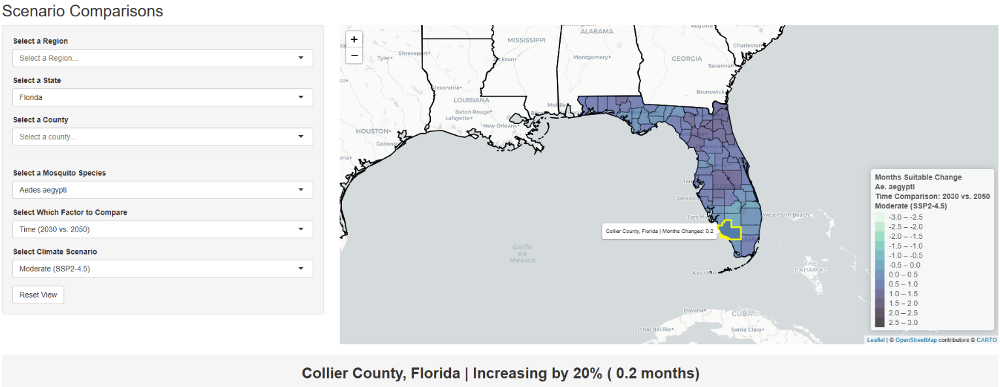
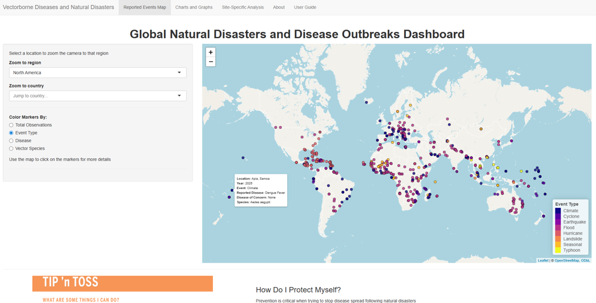
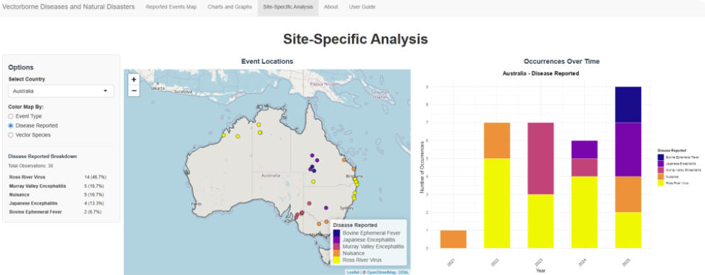
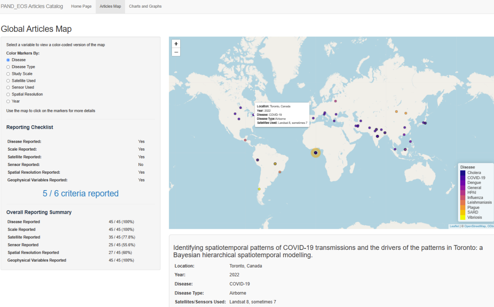
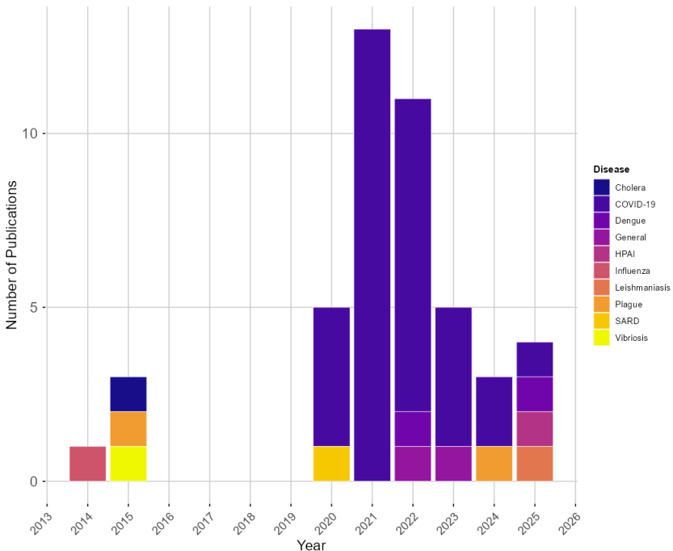
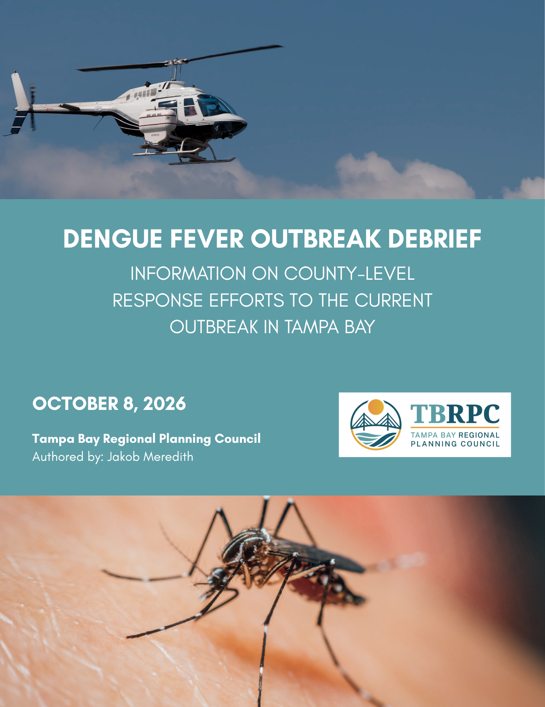
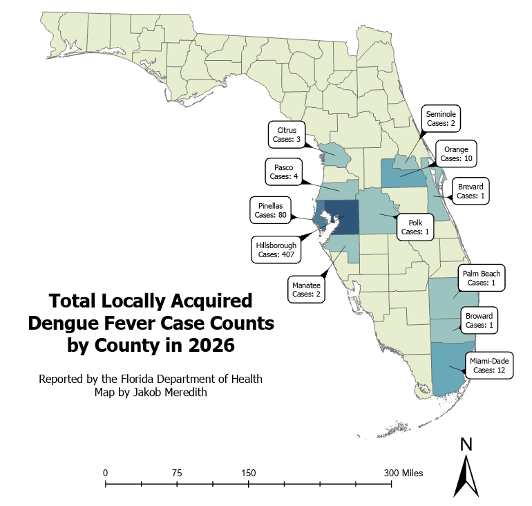

NAS Gulf Research Program Fellow | Tampa Bay Regional Planning Council
Alumni of Quantitative Disease Ecology and Conservation (QDEC) Lab | University of Florida
Interactive dashboards, GIS tools, and policy support at the intersection of regional planning, environmental resilience, and vectorborne disease management.
Projects made as part of the QDEC Lab were made under the guidance of Dr. Sadie Ryan and funded as part of a research assistantship with money provided by the University of Florida's Preeminent Professorship Award to Dr. Sadie Ryan. Projects are not yet finalized and may receive future changes.


Interactive tool for evaluating evaluating Ae. aegypti and albopictus habitat suitability at a county level for the United States showing the amount of time counties are suitable for Dengue transmission.
Open Dashboard

Visualizes impacts of natural disasters around the world on vectorborne disease risk using geocoded news articles and other primary sources.
Open Dashboard

Demonstrates potential for use of satellite imagery for pandemic detection and prevention.
Open Dashboard
Comprehensive debrief covering the 2026 Dengue fever outbreak in the Tampa Bay area along with county-level responses.
Open Debrief
Map showing the total cases of Dengue fever reported in affected Florida counties during the 2026 outbreak.
Stay tuned for an interactive dashboard!Email: jakob@tbrpc.org
LinkedIn: https://www.linkedin.com/in/jakob-meredith-mph-a4940a20b/